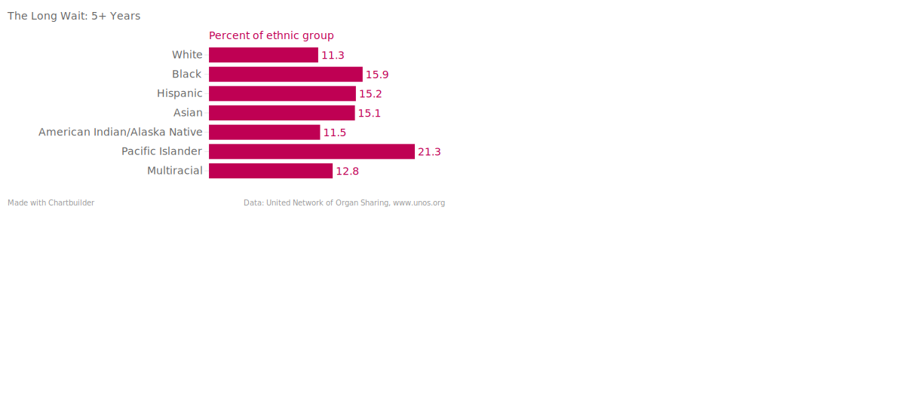

 <!doctype html>
 <html lang="en">
 
   <style type="text/css">
   h1{
   }
  body {font-family: Lora, 'Times New Roman', serif;
font-size: 19px;
font-weight: normal;
padding-bottom: 0px;
padding-left: 0px;
padding-right: 0px;
padding-top: 0px;
width: 1315px;
  }
  </style>
  
  <head>
    <!--Load the AJAX API-->
    <script type="text/javascript" src="https://www.google.com/jsapi"></script>
    <script type="text/javascript">

      // Load the Visualization API and the piechart package.
      google.load('visualization', '1.0', {'packages':['corechart']});

      // Set a callback to run when the Google Visualization API is loaded.
      google.setOnLoadCallback(drawChart);

      // Callback that creates and populates a data table,
      // instantiates the pie chart, passes in the data and
      // draws it.
      function drawChart() {

        // Create the data table.
        var data = new google.visualization.DataTable();
        data.addColumn('string', 'Ethnicity');
        data.addColumn('number', 'Patients');
        data.addRows([
          ['White', 4312],
          ['Black', 7605],
          ['Hispanic', 2017],
          ['Asian', 2402],
          ['American Indian/Alaska Native', 73],
		  ['Pacific Islander', 89],
		  ['Multiracial', 116],
        ]);

        // Set chart options
        var options = {'title':'Blood Type B Patients on Kidney Waitlist',
                       'width':1000,
                       'height':750};

        // Instantiate and draw our chart, passing in some options.
        var chart = new google.visualization.PieChart(document.getElementById('chart_div'));
        chart.draw(data, options);
      }
    </script>
  </head>

  <body>
    <!--Div that will hold the pie chart-->
    <div id="chart_div"></div>
  </body>
  
<h1>
Want a Kidney? Get in Line
</h1>

<body>
<p>


</body>


